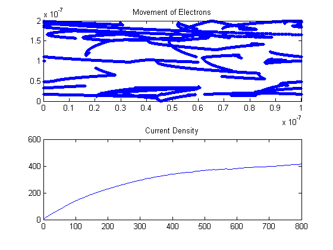
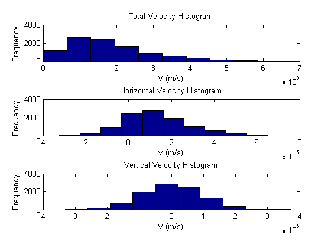
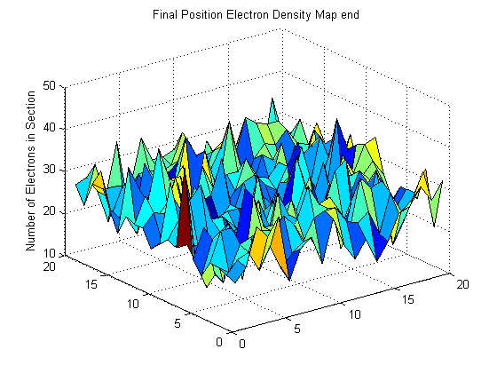
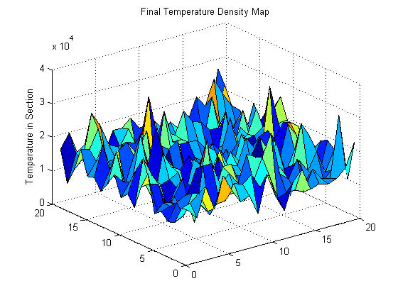

Contents
Assignment#3-Part 1:Particle Collisions and Electric Field
Jason Gazo (100975245) Date: Mar/15/2018
% Code: clc % The voltage is 0.1 V along one bound. Distance = 100nm % E=-0.1/(100nm) (x-direction) =-1000000V/m % Force on each electron Fe= qE= (-1.602*10^-19)*(-1000000)=1.602x10^-13 % Newtons % F=ma, a=F/m=1.602x10^-13/(0.26*9.109*10^-31)=6.764*10^17 m/s^2 q=-1.602*10^-19; %Set frame size w=200*10^-9; l=100*10^-9; %effective mass of electrons =mn %rest mass mo in kg mo=9.109*10^-31; m=0.26*mo; Voltageatxzero=0.1; Voltageatz100nm=0; Xelectric= -(Voltageatxzero-Voltageatz100nm)/(l); Xforce=Xelectric*q; Xaccel=Xforce/m; Voltageatyzero=0.5; Voltageaty200nm=0; yelectric= -(Voltageatyzero-Voltageaty200nm)/(w); yforce=yelectric*q; yaccel=yforce/m; %1 fprintf('The electric field is %6.4f N/C \n',Xelectric) %2 fprintf('The foce on the electrons is %6.4f N \n',Xforce) %Botlzmann constant k=1.38064*10^-23; %Nominal size of region is 200nmx100nm vt=@(t) sqrt(k*t/m); vth= vt(300); fprintf('The expected thermal velocity is %6.4f m/s \n',vt(300)) fprintf('The expected mean time between collisions is 0.200e-12 seconds\n') %mean time collisions is 0.2 ps tmn=0.2*10^-12; %mean free path mnfreepath=tmn*vt(300); fprintf('The expected mean free path is %6.4f e-08 meters\n',mnfreepath*10^8) fprintf('-----------------------------------------------------------\n') %set time step deltaT=7.562*10^-16; %Number of particles num=10000; partplot=randi([1,10000],1,20); %Randomly initialize each particle's coordinates in the frame. vertarray=rand(num,1)*w; horarray=rand(num,1)*l; %Question 1: Randomize their velocities from Maxwell-Botzmann distribution %The histograms are plotted after the movie is completed vx=randn(num,1).*vth/sqrt(2); vy=randn(num,1).*vth/sqrt(2); vrms=sqrt(vx.^2+vy.^2); totalvel=mean(vrms); movielength=800; averagexvel=zeros(1,movielength); currentx=zeros(1,movielength); time=linspace(1,movielength,movielength); ne=1e19; figure(1) %%Start the Movie and it runs for 400 iterations for i=1:movielength %3. Update X-velocity with the x-acceleration vx=vx+Xaccel*deltaT; %3. Update Y-velocity with the y-acceleration %vy=vy+yaccel*deltaT; %Horizontal Boundary conditions horarray(horarray>=l)=horarray(horarray>=l) - l; horarray(horarray<=0)=horarray(horarray<=0)+l; %Vertical boundary conditions IT=(vertarray>=w); vy(IT)=-vy(IT); vertarray(IT)=(vertarray(IT)-2*(vertarray(IT)-w)); IT=(vertarray<=0); vy(IT)=-vy(IT); vertarray(IT)=(vertarray(IT)+2*(0-vertarray(IT))); %Update particle's coordinates with its respective velocities horarray=horarray+vx.*deltaT; vertarray=vertarray+vy.*deltaT; %Question 2: Model the scattering of the electrons: pscat=1-exp(-deltaT/(0.2*10^-12)); a=rand(num,1); si = a < pscat; %Particle's assigned new velocity from Maxwell-Boltzmann %distribution vx(si)=randn(sum(si),1).*vth/sqrt(2); vy(si)=randn(sum(si),1).*vth/sqrt(2); vrms=sqrt(vx.^2+vy.^2); %Plot the Temperature vs time (title contains running average %temperature) subplot(2,1,2) currentx(i)=w*ne*(100^2)*mean(vx)*abs(q); %4. Current Function plot(time,currentx); title(['Current Density']) %Plot the movement of the particles. If scattering event has occured, %the title should then display the running average of mean free path. subplot(2,1,1) plot(horarray(partplot),vertarray(partplot),'.') title(['Movement of Electrons']); xlim([0 l]) ylim([0 w]) hold on pause(.01) end %Movie has ended %Plot histograms for the particles velocities. figure(2) subplot(3,1,1) hist(vrms,10) title('Total Velocity Histogram') xlabel('V (m/s)') ylabel('Frequency') subplot(3,1,2) hist(vx,10) title('Horizontal Velocity Histogram') xlabel('V (m/s)') ylabel('Frequency') subplot(3,1,3) hist(vy,10) title('Vertical Velocity Histogram') xlabel('V (m/s)') ylabel('Frequency') %Establish the grid to divide up the frame %Establish the grid to divide up the frame [binx,biny]=meshgrid(0:l/20:l,0:w/20:w); %This array will count the number of particles in each division of the frame zcheck=zeros(20,20); %This array will store the average temperature in each division of the frame tempcheck=zeros(20,20); counter=0; vtotal=0; %Cycle through each division of the frame for i=1:20 txmn=binx(1,i); txmx=binx(1,i+1); for r =1:20 tymn=biny(r,1); tymx=biny(r+1,1); %Cycle through each particle for mm=1:num %Check to see if particle is within this division of the frame if(horarray(mm)>txmn & horarray(mm)<txmx & vertarray(mm)<tymx & vertarray(mm)>tymn) % if r == 10 & i == 1 % pause(0.1) % end counter=counter+1; zcheck(r,i)=zcheck(r,i)+1; vtotal=vtotal+sqrt(vx(mm)^2+vy(mm)^2); if(counter~=0) tempcheck(r,i)=m*(vtotal^2)/(counter*k); end end end vtotal=0; counter=0; end end %Question 3: Plot the electron density map figure(5) surf(flipud(zcheck)) title('Final Position Electron Density Map end') zlabel('Number of Electrons in Section') %Question 4: Plot the temperature map figure(6) surf(flipud(tempcheck)) title('Final Temperature Density Map') zlabel('Temperature in Section')
The electric field is -1000000.0000 N/C The foce on the electrons is 0.0000 N The expected thermal velocity is 132244.8682 m/s The expected mean time between collisions is 0.200e-12 seconds The expected mean free path is 2.6449 e-08 meters -----------------------------------------------------------   
Summary:
% The current increased as the movie ran, this is because the % x-direction electric field caused the electrons to accelerate in the % x-direction. However due to the scattering probability the average % x-velocity of the system starts to plateau off causing the aggregate % current to plateau in unison. % When the y-direction electric field was generated the electrons build % up on the upper bound of the frame. Since the upper bound of the frame % does not have the periodic boundary behaviour (like the sides) the % particles become trapped at the top of the frame due to y-electric % field.